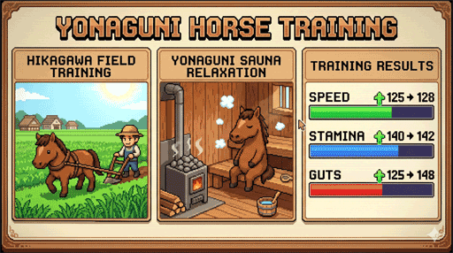
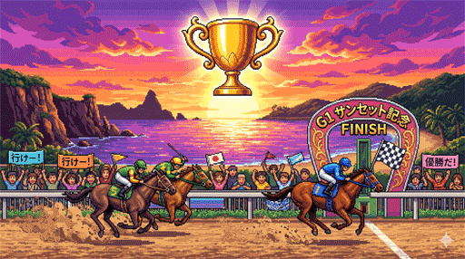
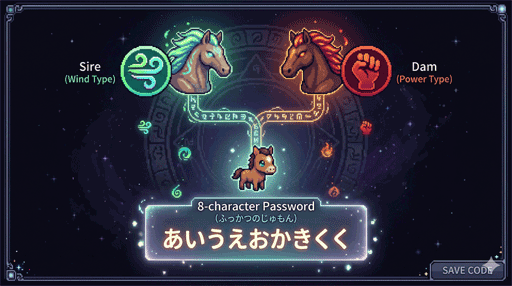

最西端の風になれ。日本最小・最強の馬、与那国馬が8bitで蘇る。

比川での地道な開墾、疲れた馬を癒やす放牧とサウナ。あなたの愛と戦略が、馬の「調子」と「能力」を極限まで引き出します。

未勝利から一般、そして重賞へ。番組表を見極め、年末の「最西端サンセット記念」を制覇し、与那国の頂点へ駆け上がれ。

育てた馬を「ふっかつのじゅもん」で召喚。最大4頭での同時対戦で、友人たちと島内最速の座を競い合え！